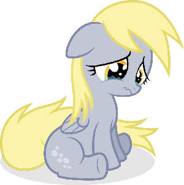

|  |
Show support ended!
Unfortunately, we have to announce that YaySteven must close down,
the person working on it has been absent for months,
We cannot update it, and the work to maintain the page and downloads online
is too much for something very outdated.
Back to YayPonies - Old archived version of YaySteven |